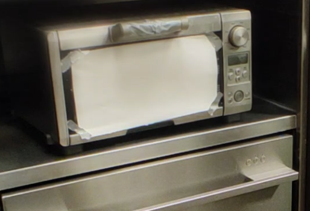
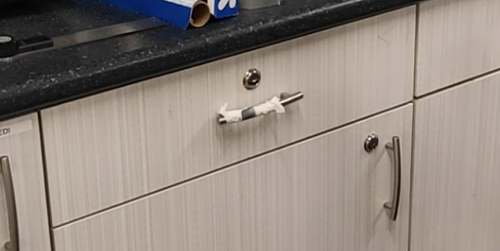
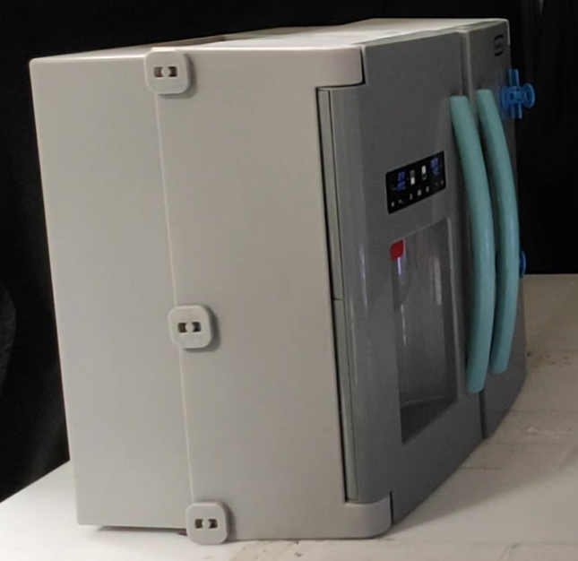
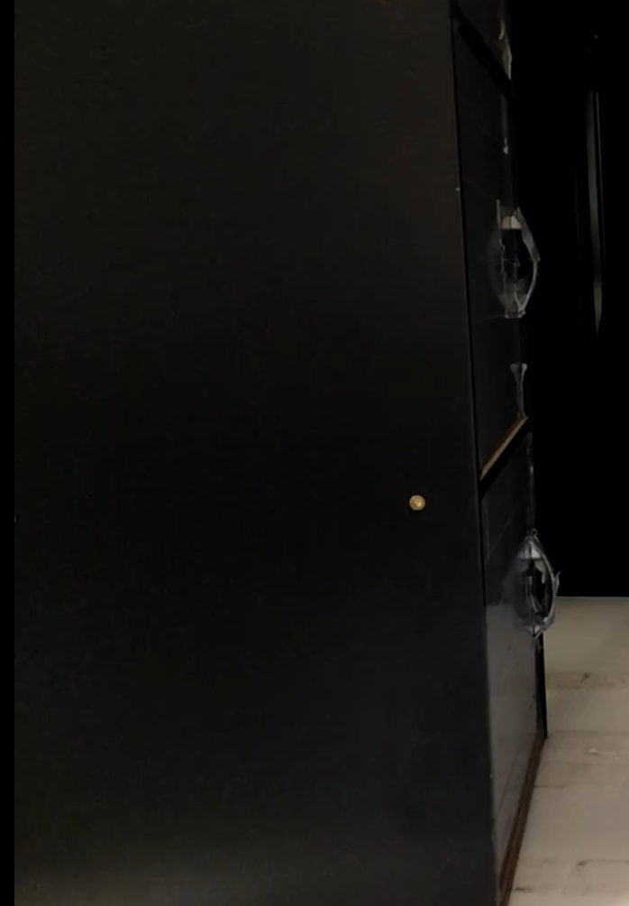
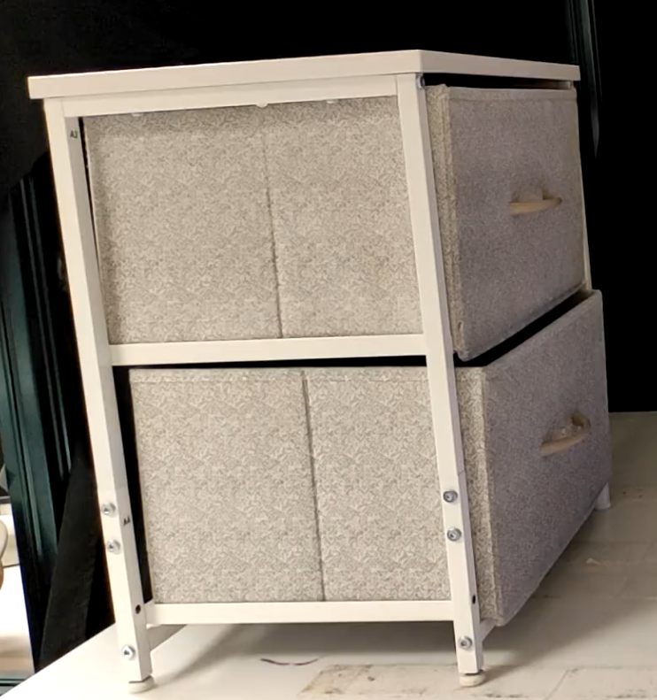
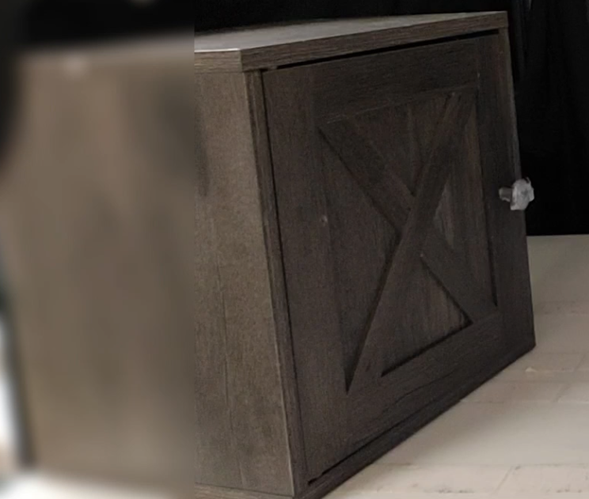
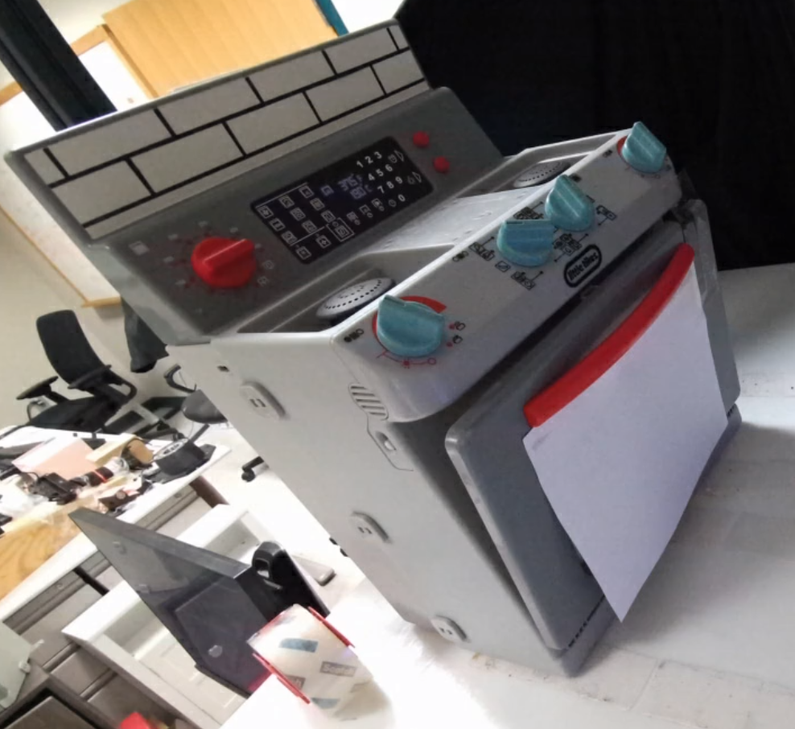

Articubot fails to grasp the handle
Robotic manipulation of articulated objects is challenging due to large variation in object geometry, handle placement, and sensing viewpoints.
Although policies trained on large datasets can generalize to many objects, failures still occur on out-of-distribution objects or observations.
We study \emph{test-time demonstration conditioning}, where a pre-trained policy is provided a single additional demonstration as an input and must adapt without any weight updates.
We instantiate this for articulated opening with a 3D point-cloud policy that jointly reasons over the current observation and the demonstration, and we find that simple 3D concatenation outperforms latent-space conditioning alternatives.
To make demonstrations easy to collect in the real world, we use a human hand demonstration captured in two RGB-D keyframes, and map it to gripper-frame points for the policy.
In simulation, a single demonstration improves normalized opening on previously low-performing objects by 12.4\%.
On two real robot platforms, it increases grasp success from 74.0\% to 86.6\% on tabletop objects and from 33.0\% to 83.3\% on mobile objects, and improves mobile normalized opening from 0.11 to 0.35.
Videos and code can be found on our \href{https://in-context-learning.github.io/}{project website}.
Overview: Given an unseen object, a demonstration of opening the object is provided as an additional input to the policy. The policy is then conditioned on this test-time demonstration to successfully manipulate the unseen object.
Network Architecture: The policy network architecture takes as input current observation and demonstation as input. The current observation includes point cloud of the object besides the current EEF position. The demonstration includes the object point cloud in a different orientation along with the grasping and the opening EEF points in this different orientation.
The current observation and the demonstration are then concatenated and passed to a Weighted Displacemene Model derived from prior work. The weighted displacement model outputs per point displacements and per point weights which are then aggregated to predict the subgoal EEF points.
Human Demonstration in the real world: We record the human demonstration as an RGBD image the real world and convert it to the robot EEF points. We first apply WiloR, a state of the art hand detection method to detect the human hand. We also use SAM to segment the human hand in the image.
The WiloR hand mask is accurate but the predicted depth might be wrong. We scale the WiloR predicted depth with the real depth from the depth camera, which gives us an aligned hand mesh with the object from which we calculate the position and the orientation of the hand. Finally we convert this to the robot EEF points.
We test our Test-time Demonstration Conditioning policy and the baseline, Articubot policy in Kitchens on 5 unseen real-world articulated objects with a X-Arm on a mobile base using UMI gripper. We use 2 Azure Kinects as the cameras. Videos are 6x speed.
Articubot fails to grasp the handle
(Ours) Human demo collected for Oven Demo
Our method opening Oven conditioned on the human demo
Articubot fails to grasp
(Ours) Human demo collected for Cabinet 1
Our method opening Cabinet 1 conditioned on the human demo
Articubot fails to grasp
(Ours) Human demo collected for Cabinet 2
Our method opening Cabinet 2 conditioned on the human demo
Articubot fails to grasp
(Ours) Human demo collected for Drawer
Our method opening Drawer conditioned on the human demo
We test our Test-time Demonstration Conditioning policy and the baseline, Articubot policy on 5 unseen articulated objects on a table top with Franka Arm and two Azure Kinects cameras. Videos are 6x speed.
Articubot fails to grasp
(Ours) Human demo collected for Toy Fridge
Our method opening table top toy fridge conditioned on the human demo
Articubot graps but fails to open
(Ours) Human demo collected for 3 layered cabinet
Our method opening 3 layered cabinet conditioned on the human demo
Articubot fails to open fully due to wrong opening predictions
(Ours) Human demo collected for White Drawer
Our method opening white drawer conditioned on the human demo
Articubot partially opens knob cabinet
(Ours) Human demo collected for Knob Cabinet
Our method opening knob cabinet conditioned on the human demo
Articubot partially opening the Toy Oven due to wrong prediction
(Ours) Human demo collected for Toy Oven
Our method opening table top toy oven conditioned on the human demo
Please click an image below to view the demos that have been collected.






